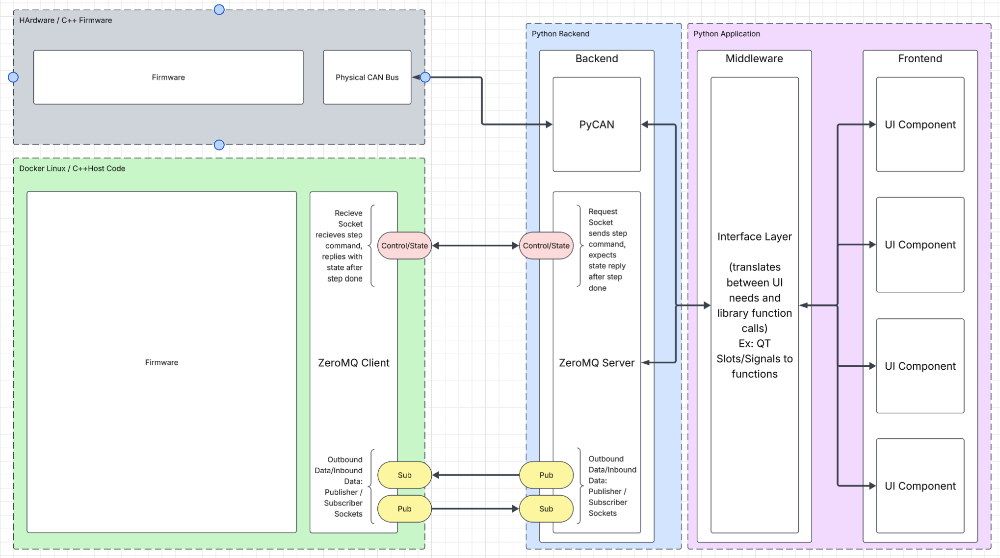

Software-in-the-Loop Framework
Goals: Research and develop a framework for software-in-the-loop testing of embedded firmware before it runs on the VCU.
Results: Created a framework for future development and led the design of a new Python library for future testing applications to build on.
Skills: C++, Python, Lucidchart, ZeroMQ, research